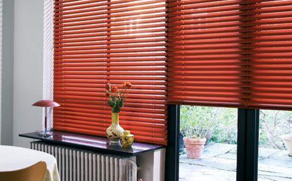
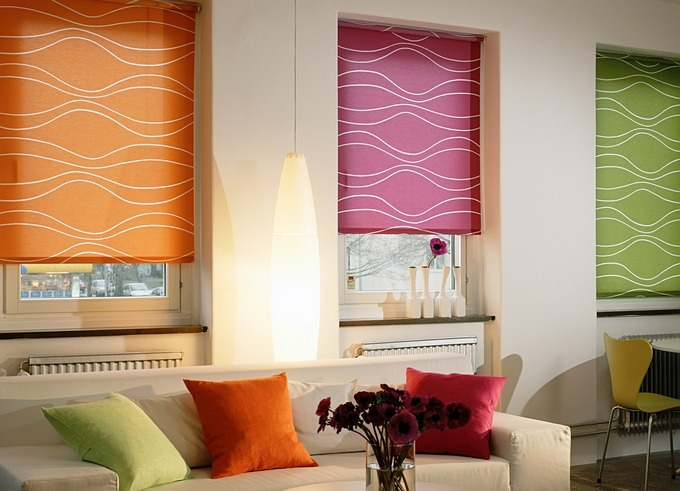
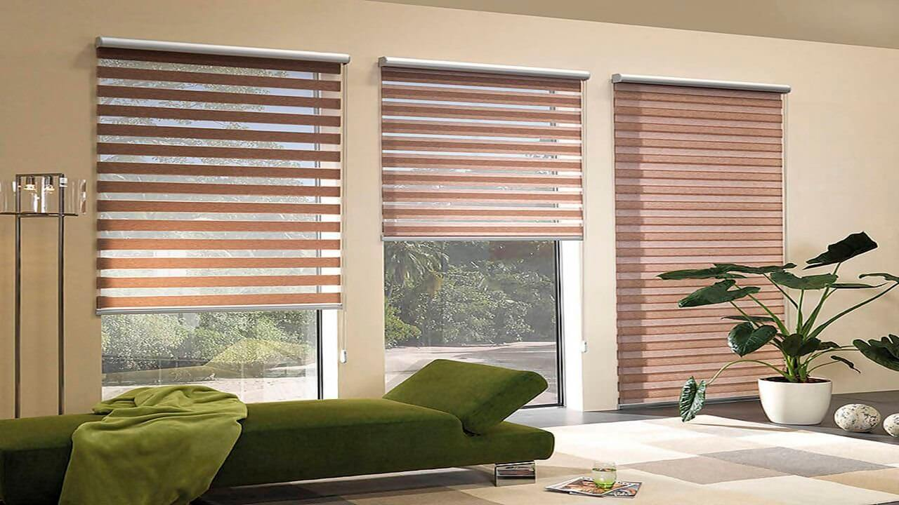

Помимо обслуживания и ремонта окон, рады вам предложить изготовление и установку жалюзи, рольштор и штор день-ночь.



Помимо обслуживания и ремонта окон, рады вам предложить изготовление и установку жалюзи, рольштор и штор день-ночь.
Пластиковые окна не требуют покраски, необходимо лишь следить за их чистотой. ПВХ-профиль нельзя очищать средствами, содержащими растворители, ацетон или абразивные вещества. Лучше всего осуществлять уход при помощи мыльного раствора и мягкой ткани или губки. Следует избегать контакта ПВХ-профиля с горячими предметами, а также не допускать ударов и нанесения царапин — это может причинить вред как внешнему виду, так и нормальному функционированию ваших окон. Уход за пластиковыми окнами включает в себя также и уход за уплотнителями. Эта важная деталь не дает атмосферным осадкам и уличному шуму просочиться в Ваш дом и уберегает его от сквозняков. Обязательно приобретите и средства для ухода за уплотнителями — так Ваши окна прослужат гораздо дольше. В процессе эксплуатации любого предмета неизбежны мелкие повреждения и поломки. Например,может разболтаться оконная ручка или хуже открываться раздвижная рама. В такой ситуации лучше вызвать специалиста: это убережет Вас от порчи фурнитуры. Оплатить небольшой ремонт выйдет значительно дешевле, чем заново покупать окна. В окнах из ПВХ-профиля предусмотрены каналы для удаления влаги, скапливающейся внутри. Осуществляя уход за пластиковыми окнами, обращайте внимание и на состояние этих водоотводящих каналов (они расположены в нижней части рамы): следите, чтобы в них не скапливалась грязь. Поскольку окна ПВХ отличаются высокой герметичностью, в закрытом состоянии они пропускают внутрь мало воздуха. Как следствие, возникает проблема выпадения конденсата на стеклопакетах. Для решения данной проблемы просто проветривайте чаще или установите систему кондиционирования воздуха, а также, устанавливая окна, учтите, что подоконник не должен перекрывать потоки теплого воздуха от отопительных батарей.
Плотность соединений ― это отличительная черта всех качественных пластиковых окон. Благодаря этому в помещение не проникает шум и холод, но собирается влага, что особенно заметно на кухнях. Влага собирается на холодных участках пластиковых окон, она видна в качестве испарины, а в холода замерзает и превращается в наледь. Окна ПВХ, как правило, этого не любят. Простейший способ понизить влажность ― просто регулярно проветривать помещение. Есть способ автоматизировать проветривание, установив кондиционер или вентилятор. Высокий комфорт в помещении достигается при 55% влажности. Предотвратить возникновение испарины на стекле можно, не загораживая поток тепла, идущий от батарей отопления на окно. Мягкая ткань и аккуратные движения ― вот что поможет вам очистить окно, не повредив поверхность рам. Уплотнители сделаны из современных материалов. Высокая эластичность, устойчивость к температурам и прочность позволяют уплотнителям прослужить долго. Но, несмотря на это, они со временем теряют эти качества. Чтобы резиновые элементы окон, защищающие вас от дождя и ветра, прослужили дольше и не изнашивались, необходимо раз в сезон очищать их от накапливающейся грязи. Для этого лучше всего использовать впитывающую ткань и специальные средства. После такой обработки сохраняется эластичность резиновых элементов, и окна ПВХ не будут продуваться ветром и пропускать влагу.